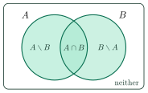
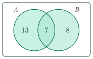
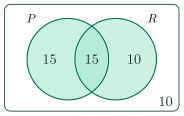

Counting with Venn DiagramsĐếm bằng biểu đồ Venn
Grade 10 · Topic: Sets and IntervalsLớp 10 · Chủ đề: Tập hợp và khoảng
1Lesson IntroductionGiới thiệu bài học
Learning goalsMục tiêu bài học
By the end of this lesson you can:
Sau bài học này, em có thể:
read a Venn diagram of two sets and name its four regions;
đọc biểu đồ Venn của hai tập hợp và gọi tên bốn vùng;
use \(n(A\cup B)=n(A)+n(B)-n(A\cap B)\);
dùng công thức \(n(A\cup B)=n(A)+n(B)-n(A\cap B)\);
find “only”, “both”, “at least one” and “neither” counts;
tìm số phần tử “chỉ”, “cả hai”, “ít nhất một” và “không … nào”;
solve word problems with a Venn diagram;
giải bài toán có lời văn bằng biểu đồ Venn;
(extension) count with three sets.
(mở rộng) đếm với ba tập hợp.
2Mathematical VocabularyTừ vựng Toán học
Venn diagram – a picture that uses circles to show sets. “Draw a Venn diagram of the two sets.”
Biểu đồ Venn – hình dùng các đường tròn để biểu diễn tập hợp. “Draw a Venn diagram of the two sets.”
region – a part of a Venn diagram. “Write a number in each region.”
Vùng – một phần của biểu đồ Venn. “Write a number in each region.”
number of elements – how many elements a set has. We write \(n(A)\).
Số phần tử – tập hợp có bao nhiêu phần tử. Ta viết \(n(A)\).
union – elements in \(A\), in \(B\), or in both: \(A\cup B\).
Hợp – phần tử thuộc \(A\), thuộc \(B\), hoặc thuộc cả hai: \(A\cup B\).
intersection – elements in both \(A\) and \(B\): \(A\cap B\).
Giao – phần tử thuộc cả \(A\) và \(B\): \(A\cap B\).
difference – elements in \(A\) but not in \(B\): \(A\setminus B\).
Hiệu – phần tử thuộc \(A\) nhưng không thuộc \(B\): \(A\setminus B\).
disjoint sets – two sets with no common element: \(A\cap B=\varnothing\).
Hai tập rời nhau – hai tập không có phần tử chung: \(A\cap B=\varnothing\).
3Useful English PhrasesCụm từ tiếng Anh thường gặp
“at least one” – in the union. “Find how many students play at least one sport.”
“at least one” – thuộc hợp. “Find how many students play at least one sport.”
“both” – in the intersection. “Find how many students like both subjects.”
“both” – thuộc giao. “Find how many students like both subjects.”
“only A” – in \(A\) but not in \(B\), so use \(n(A)-n(A\cap B)\).
“only A” – thuộc \(A\) nhưng không thuộc \(B\), dùng \(n(A)-n(A\cap B)\).
“neither” – outside both circles: total minus \(n(A\cup B)\).
“neither” – nằm ngoài cả hai đường tròn: tổng trừ \(n(A\cup B)\).
“Draw a Venn diagram and fill in the numbers.” – Vẽ biểu đồ Venn và điền số vào các vùng.
“Draw a Venn diagram and fill in the numbers.” – Vẽ biểu đồ Venn và điền số vào các vùng.
4Prerequisite ReviewÔn tập kiến thức nền
Let \(A=\{1,2,3\}\) and \(B=\{2,3,4,5\}\). Then \(A\cap B=\{2,3\}\) and \(A\cup B=\{1,2,3,4,5\}\).
Cho \(A=\{1,2,3\}\) và \(B=\{2,3,4,5\}\). Khi đó \(A\cap B=\{2,3\}\) và \(A\cup B=\{1,2,3,4,5\}\).
The number of elements are \(n(A)=3\), \(n(B)=4\), \(n(A\cap B)=2\), \(n(A\cup B)=5\). Notice that \(5=3+4-2\). This is the idea of the whole lesson.
Số phần tử: \(n(A)=3\), \(n(B)=4\), \(n(A\cap B)=2\), \(n(A\cup B)=5\). Chú ý \(5=3+4-2\). Đây là ý tưởng của cả bài học.
5TheoryLý thuyết
5.1 A Venn diagram with two setsBiểu đồ Venn của hai tập hợp
A Venn diagram uses two circles. They make four regions: \(A\) only, both, \(B\) only, and neither (outside the circles).
Biểu đồ Venn dùng hai đường tròn. Chúng tạo ra bốn vùng: chỉ \(A\), cả hai, chỉ \(B\), và không thuộc tập nào (ngoài hai đường tròn).

5.2 Counting formulasCác công thức đếm
FormulasCông thức
If \(E\) is the whole group, then the number of elements in neither set is \(n(E)-n(A\cup B)\).
Nếu \(E\) là cả nhóm, số phần tử không thuộc tập nào là \(n(E)-n(A\cup B)\).
If \(A\) and \(B\) are disjoint sets, then \(n(A\cup B)=n(A)+n(B)\).
Nếu \(A\) và \(B\) là hai tập rời nhau thì \(n(A\cup B)=n(A)+n(B)\).
Why do we subtract \(n(A\cap B)\)? Elements in both sets are counted once in \(n(A)\) and once in \(n(B)\). We keep only one of the two counts.
Vì sao phải trừ \(n(A\cap B)\)? Phần tử thuộc cả hai tập bị đếm một lần trong \(n(A)\) và một lần nữa trong \(n(B)\). Ta chỉ giữ một trong hai lần đếm.
5.3 Words and regionsTừ ngữ và vùng tương ứng
| English phraseCụm từ tiếng Anh | RegionVùng | CountCách đếm |
|---|---|---|
| at least oneít nhất một | \(A\cup B\) | \(n(A)+n(B)-n(A\cap B)\) |
| bothcả hai | \(A\cap B\) | \(n(A\cap B)\) |
| only Achỉ A | \(A\setminus B\) | \(n(A)-n(A\cap B)\) |
| only Bchỉ B | \(B\setminus A\) | \(n(B)-n(A\cap B)\) |
| neitherkhông … nào | outside both circlesngoài cả hai đường tròn | total \(-\,n(A\cup B)\)tổng \(-\,n(A\cup B)\) |
5.4 Method for word problemsCách giải bài toán có lời văn
Name the sets (for example \(F\) and \(V\)) and write the given numbers.
Đặt tên cho các tập (ví dụ \(F\) và \(V\)) và ghi các số đã cho.
Draw two circles inside a rectangle for the whole group.
Vẽ hai đường tròn trong một hình chữ nhật biểu diễn cả nhóm.
Fill the middle region (both) first, then the “only” regions, then the outside.
Điền vùng giữa (cả hai) trước, rồi các vùng “chỉ”, rồi vùng ngoài.
Check: all regions must add up to the total.
Kiểm tra: tổng các vùng phải bằng tổng số.
5.5 Extension: three setsMở rộng: ba tập hợp
ExtensionMở rộng
For three sets the inclusion–exclusion formula is
Với ba tập hợp, công thức bao hàm – loại trừ là
We subtract the pairs, but this removes the triple intersection too many times, so we add it back once.
Ta trừ các cặp, nhưng như vậy phần giao của cả ba tập bị trừ quá nhiều lần, nên phải cộng lại một lần.
6Worked ExamplesVí dụ có lời giải
ExampleVí dụ 1BasicCơ bản – Two setsHai tập hợp
Let \(n(A)=20\), \(n(B)=15\) and \(n(A\cap B)=7\). Find \(n(A\cup B)\), \(n(A\setminus B)\) and \(n(B\setminus A)\).
Cho \(n(A)=20\), \(n(B)=15\), \(n(A\cap B)=7\). Tìm \(n(A\cup B)\), \(n(A\setminus B)\) và \(n(B\setminus A)\).
Analysis: We know the middle region (7) and the totals of the two circles. Subtract the middle from each total.
Phân tích: Ta biết vùng giữa (7) và tổng của hai đường tròn. Lấy mỗi tổng trừ vùng giữa.
\(n(A\cup B)=20+15-7=28\).
\(n(A\cup B)=20+15-7=28\).
\(n(A\setminus B)=20-7=13\) and \(n(B\setminus A)=15-7=8\).
\(n(A\setminus B)=20-7=13\) và \(n(B\setminus A)=15-7=8\).
Check: \(13+7+8=28\).
Kiểm tra: \(13+7+8=28\).

Venn diagram for Example 1.Biểu đồ Venn cho Ví dụ 1.
ExampleVí dụ 2IntermediateTrung bình – A survey with “neither”Khảo sát có “không … nào”
In a group of 50 students, 30 like pop music, 25 like rock music and 10 like neither. How many like both? How many like pop only?
Trong nhóm 50 học sinh, 30 em thích nhạc pop, 25 em thích nhạc rock và 10 em không thích loại nào. Có bao nhiêu em thích cả hai? Bao nhiêu em chỉ thích pop?
Analysis: First find the students who like at least one kind of music. Then use the formula backwards to find “both”.
Phân tích: Trước hết tìm số em thích ít nhất một loại nhạc. Rồi dùng công thức theo chiều ngược lại để tìm “cả hai”.
At least one: \(50-10=40\), so \(n(P\cup R)=40\).
Ít nhất một loại: \(50-10=40\), nên \(n(P\cup R)=40\).
\(40=30+25-n(P\cap R)\), so \(n(P\cap R)=55-40=15\).
\(40=30+25-n(P\cap R)\) nên \(n(P\cap R)=55-40=15\).
Pop only: \(30-15=15\). Rock only: \(25-15=10\). Check: \(15+15+10=40\).
Chỉ pop: \(30-15=15\). Chỉ rock: \(25-15=10\). Kiểm tra: \(15+15+10=40\).

Venn diagram for Example 2 (10 outside).Biểu đồ Venn cho Ví dụ 2 (10 em ở ngoài).
ExampleVí dụ 3IntermediateTrung bình – Finding “both” from “neither”Tìm “cả hai” từ “không … nào”
In a class of 45 students, 28 study French, 22 study German and 8 study neither language. How many study both? How many study French only?
Lớp có 45 học sinh: 28 em học tiếng Pháp, 22 em học tiếng Đức và 8 em không học thứ tiếng nào. Có bao nhiêu em học cả hai? Bao nhiêu em chỉ học tiếng Pháp?
Analysis: The students who study at least one language are the whole class minus the “neither” group.
Phân tích: Số em học ít nhất một thứ tiếng bằng cả lớp trừ nhóm “không … nào”.
\(n(F\cup G)=45-8=37\).
\(n(F\cup G)=45-8=37\).
\(n(F\cap G)=28+22-37=13\).
\(n(F\cap G)=28+22-37=13\).
French only: \(28-13=15\). German only: \(22-13=9\). Check: \(15+13+9+8=45\).
Chỉ tiếng Pháp: \(28-13=15\). Chỉ tiếng Đức: \(22-13=9\). Kiểm tra: \(15+13+9+8=45\).
ExampleVí dụ 4ExtensionMở rộng – Three setsBa tập hợp
Let \(n(A)=12\), \(n(B)=10\), \(n(C)=8\), \(n(A\cap B)=5\), \(n(A\cap C)=3\), \(n(B\cap C)=2\) and \(n(A\cap B\cap C)=1\). Find \(n(A\cup B\cup C)\).
Cho \(n(A)=12\), \(n(B)=10\), \(n(C)=8\), \(n(A\cap B)=5\), \(n(A\cap C)=3\), \(n(B\cap C)=2\) và \(n(A\cap B\cap C)=1\). Tìm \(n(A\cup B\cup C)\).
Analysis: Use the inclusion–exclusion formula for three sets: add the singles, subtract the pairs, add the triple.
Phân tích: Dùng công thức bao hàm – loại trừ cho ba tập: cộng các tập đơn, trừ các cặp, cộng lại phần giao của cả ba.
Add the singles: \(12+10+8=30\).
Cộng các tập đơn: \(12+10+8=30\).
Subtract the pairs: \(30-(5+3+2)=20\).
Trừ các cặp: \(30-(5+3+2)=20\).
Add the triple: \(20+1=21\).
Cộng phần giao của cả ba: \(20+1=21\).
7PracticeBài tập luyện tập
A. Multiple ChoiceA. Trắc nghiệm nhiều lựa chọn
If \(n(A)=14\), \(n(B)=9\) and \(n(A\cap B)=4\), what is \(n(A\cup B)\)?
Nếu \(n(A)=14\), \(n(B)=9\), \(n(A\cap B)=4\) thì \(n(A\cup B)\) bằng bao nhiêu?
Answer: b. \(14+9-4=19\).
Đáp án b. \(14+9-4=19\).
In a group of 40 students, 24 play chess, 18 draw and 6 do both. How many play chess only?
Trong nhóm 40 học sinh, 24 em chơi cờ, 18 em vẽ và 6 em làm cả hai. Có bao nhiêu em chỉ chơi cờ?
Answer: c. Chess only = \(24-6=18\).
Đáp án c. Chỉ chơi cờ = \(24-6=18\).
If \(n(A\cup B)=30\), \(n(A)=18\) and \(n(B)=17\), what is \(n(A\cap B)\)?
Nếu \(n(A\cup B)=30\), \(n(A)=18\), \(n(B)=17\) thì \(n(A\cap B)\) bằng bao nhiêu?
Answer: a. \(n(A\cap B)=18+17-30=5\).
Đáp án a. \(n(A\cap B)=18+17-30=5\).
Which expression gives the number of elements in \(B\) only?
Biểu thức nào cho số phần tử chỉ thuộc \(B\)?
Answer: b. Remove the common part from \(n(B)\).
Đáp án b. Bỏ phần chung khỏi \(n(B)\).
In a group of 60, \(n(A\cup B)=48\). How many are in neither set?
Trong nhóm 60 người, \(n(A\cup B)=48\). Có bao nhiêu người không thuộc tập nào?
Answer: a. \(60-48=12\).
Đáp án a. \(60-48=12\).
B. True or FalseB. Đúng hoặc sai
True or false: \(n(A\cup B)=n(A)+n(B)\) is always true.
Đúng hay sai: \(n(A\cup B)=n(A)+n(B)\) luôn đúng.
False. It is true only when \(A\) and \(B\) have no common element.
Sai. Công thức chỉ đúng khi \(A\) và \(B\) không có phần tử chung.
True or false: if \(A\cap B=\varnothing\), then \(n(A\cup B)=n(A)+n(B)\).
Đúng hay sai: nếu \(A\cap B=\varnothing\) thì \(n(A\cup B)=n(A)+n(B)\).
True. Then \(n(A\cap B)=0\).
Đúng. Khi đó \(n(A\cap B)=0\).
True or false: \(n(A\cup B)\) can be smaller than \(n(A)\).
Đúng hay sai: \(n(A\cup B)\) có thể nhỏ hơn \(n(A)\).
False. \(A\subset A\cup B\), so \(A\cup B\) has at least as many elements as \(A\).
Sai. \(A\subset A\cup B\) nên \(A\cup B\) có ít nhất nhiều phần tử bằng \(A\).
C. Short AnswerC. Trả lời ngắn
In a group of 60 students, 35 study French, 28 study German and 10 study both. How many study neither language?
Trong nhóm 60 học sinh, 35 em học tiếng Pháp, 28 em học tiếng Đức và 10 em học cả hai. Có bao nhiêu em không học thứ tiếng nào?
Enter a whole number.
Nhập một số nguyên.
Answer: 7. \(35+28-10=53\) study at least one language, so \(60-53=7\).
Đáp số: 7. \(35+28-10=53\) em học ít nhất một thứ tiếng nên \(60-53=7\).
If \(n(A)=25\), \(n(B)=19\) and \(n(A\cup B)=38\), find \(n(A\cap B)\).
Nếu \(n(A)=25\), \(n(B)=19\), \(n(A\cup B)=38\), tìm \(n(A\cap B)\).
Enter a whole number.
Nhập một số nguyên.
Answer: 6. \(25+19-38=6\).
Đáp số: 6. \(25+19-38=6\).
(Extension) Let \(n(A)=10\), \(n(B)=8\), \(n(C)=6\), \(n(A\cap B)=3\), \(n(A\cap C)=2\), \(n(B\cap C)=1\) and \(n(A\cap B\cap C)=1\). Find \(n(A\cup B\cup C)\).
(Mở rộng) Cho \(n(A)=10\), \(n(B)=8\), \(n(C)=6\), \(n(A\cap B)=3\), \(n(A\cap C)=2\), \(n(B\cap C)=1\), \(n(A\cap B\cap C)=1\). Tìm \(n(A\cup B\cup C)\).
Enter a whole number.
Nhập một số nguyên.
Answer: 19. \(10+8+6-3-2-1+1=19\).
Đáp số: 19. \(10+8+6-3-2-1+1=19\).
In a class of 36 students, 20 like tea and 22 like coffee. Every student likes at least one drink. How many like both?
Lớp có 36 học sinh, 20 em thích trà và 22 em thích cà phê. Mỗi em thích ít nhất một loại. Có bao nhiêu em thích cả hai?
Enter a whole number.
Nhập một số nguyên.
Answer: 6. \(36=20+22-n(T\cap C)\), so \(n(T\cap C)=6\).
Đáp số: 6. \(36=20+22-n(T\cap C)\) nên \(n(T\cap C)=6\).
D. Mathematical EnglishD. Tiếng Anh Toán học
“Find the number of students who like tea only” means:
“Find the number of students who like tea only” có nghĩa là:
Answer: a. “Only” means the difference: tea but not coffee.
Đáp án a. “Only” nghĩa là hiệu: thích trà nhưng không thích cà phê.
In a Venn diagram, “neither” is the region:
Trong biểu đồ Venn, “neither” là vùng:
Answer: c. “Neither” means not in \(A\) and not in \(B\).
Đáp án c. “Neither” nghĩa là không thuộc \(A\) và không thuộc \(B\).
E. Explanation (not scored)E. Giải thích (không tính điểm)
In 2–3 simple English sentences, explain why \(n(A\cup B)\) is not always \(n(A)+n(B)\).
Viết 2–3 câu tiếng Anh đơn giản giải thích vì sao \(n(A\cup B)\) không phải lúc nào cũng bằng \(n(A)+n(B)\).
Sample answer: “Some elements are in both sets. When we add n(A) and n(B), we count these elements twice. So we subtract the elements in the intersection once.”
Câu trả lời mẫu (giữ bằng tiếng Anh). Hãy kiểm tra: bài của bạn đã nói “phần tử chung bị đếm hai lần” chưa?
A. Multiple ChoiceA. Trắc nghiệm nhiều lựa chọn
If \(n(A)=16\), \(n(B)=11\) and \(n(A\cap B)=5\), what is \(n(A\cup B)\)?
Nếu \(n(A)=16\), \(n(B)=11\), \(n(A\cap B)=5\) thì \(n(A\cup B)\) bằng bao nhiêu?
Answer: c. \(16+11-5=22\).
Đáp án c. \(16+11-5=22\).
In a group of 45 students, 27 play badminton, 20 swim and 8 do both. How many play badminton only?
Trong nhóm 45 học sinh, 27 em chơi cầu lông, 20 em bơi và 8 em làm cả hai. Có bao nhiêu em chỉ chơi cầu lông?
Answer: a. Badminton only = \(27-8=19\).
Đáp án a. Chỉ chơi cầu lông = \(27-8=19\).
If \(n(A\cup B)=34\), \(n(A)=21\) and \(n(B)=19\), what is \(n(A\cap B)\)?
Nếu \(n(A\cup B)=34\), \(n(A)=21\), \(n(B)=19\) thì \(n(A\cap B)\) bằng bao nhiêu?
Answer: d. \(n(A\cap B)=21+19-34=6\).
Đáp án d. \(n(A\cap B)=21+19-34=6\).
Which expression gives the number of elements in \(A\) only?
Biểu thức nào cho số phần tử chỉ thuộc \(A\)?
Answer: c. Remove the common part from \(n(A)\).
Đáp án c. Bỏ phần chung khỏi \(n(A)\).
In a group of 80, \(n(A\cup B)=65\). How many are in neither set?
Trong nhóm 80 người, \(n(A\cup B)=65\). Có bao nhiêu người không thuộc tập nào?
Answer: b. \(80-65=15\).
Đáp án b. \(80-65=15\).
B. True or FalseB. Đúng hoặc sai
True or false: \(n(A\cup B)=n(A)+n(B)-n(A\cap B)\) is always true.
Đúng hay sai: \(n(A\cup B)=n(A)+n(B)-n(A\cap B)\) luôn đúng.
True. This is the counting formula. It works for any two finite sets.
Đúng. Đây là công thức đếm; nó đúng với hai tập hữu hạn bất kì.
True or false: if \(A\) and \(B\) have a common element, then \(n(A\cup B)=n(A)+n(B)\).
Đúng hay sai: nếu \(A\) và \(B\) có phần tử chung thì \(n(A\cup B)=n(A)+n(B)\).
False. The common elements are counted twice, so we must subtract them once.
Sai. Các phần tử chung bị đếm hai lần nên phải trừ đi một lần.
True or false: \(n(A\cap B)\) can be larger than \(n(A)\).
Đúng hay sai: \(n(A\cap B)\) có thể lớn hơn \(n(A)\).
False. \(A\cap B\subset A\), so \(A\cap B\) has at most as many elements as \(A\).
Sai. \(A\cap B\subset A\) nên \(A\cap B\) có nhiều nhất bằng số phần tử của \(A\).
C. Short AnswerC. Trả lời ngắn
In a group of 50 students, 30 study Japanese, 24 study Korean and 9 study both. How many study neither language?
Trong nhóm 50 học sinh, 30 em học tiếng Nhật, 24 em học tiếng Hàn và 9 em học cả hai. Có bao nhiêu em không học thứ tiếng nào?
Enter a whole number.
Nhập một số nguyên.
Answer: 5. \(30+24-9=45\) study at least one language, so \(50-45=5\).
Đáp số: 5. \(30+24-9=45\) em học ít nhất một thứ tiếng nên \(50-45=5\).
If \(n(A)=30\), \(n(B)=22\) and \(n(A\cup B)=44\), find \(n(A\cap B)\).
Nếu \(n(A)=30\), \(n(B)=22\), \(n(A\cup B)=44\), tìm \(n(A\cap B)\).
Enter a whole number.
Nhập một số nguyên.
Answer: 8. \(30+22-44=8\).
Đáp số: 8. \(30+22-44=8\).
(Extension) Let \(n(A)=12\), \(n(B)=9\), \(n(C)=7\), \(n(A\cap B)=4\), \(n(A\cap C)=3\), \(n(B\cap C)=2\) and \(n(A\cap B\cap C)=1\). Find \(n(A\cup B\cup C)\).
(Mở rộng) Cho \(n(A)=12\), \(n(B)=9\), \(n(C)=7\), \(n(A\cap B)=4\), \(n(A\cap C)=3\), \(n(B\cap C)=2\), \(n(A\cap B\cap C)=1\). Tìm \(n(A\cup B\cup C)\).
Enter a whole number.
Nhập một số nguyên.
Answer: 20. \(12+9+7-4-3-2+1=20\).
Đáp số: 20. \(12+9+7-4-3-2+1=20\).
In a class of 42 students, 25 like pizza and 28 like noodles. Every student likes at least one food. How many like both?
Lớp có 42 học sinh, 25 em thích pizza và 28 em thích mì. Mỗi em thích ít nhất một món. Có bao nhiêu em thích cả hai món?
Enter a whole number.
Nhập một số nguyên.
Answer: 11. \(42=25+28-n(P\cap N)\), so \(n(P\cap N)=11\).
Đáp số: 11. \(42=25+28-n(P\cap N)\) nên \(n(P\cap N)=11\).
D. Mathematical EnglishD. Tiếng Anh Toán học
“Find the number of students who play badminton only” means:
“Find the number of students who play badminton only” có nghĩa là:
Answer: b. “Only” means the difference: badminton but not swimming.
Đáp án b. “Only” nghĩa là hiệu: chơi cầu lông nhưng không bơi.
In a Venn diagram, “both” is the region:
Trong biểu đồ Venn, “both” là vùng:
Answer: c. “Both” means in \(A\) and in \(B\): the overlap of the two circles.
Đáp án c. “Both” nghĩa là thuộc \(A\) và thuộc \(B\): phần chung của hai hình tròn.
E. Explanation (not scored)E. Giải thích (không tính điểm)
In 2–3 simple English sentences, explain why we subtract \(n(A\cap B)\) in the formula \(n(A\cup B)=n(A)+n(B)-n(A\cap B)\).
Viết 2–3 câu tiếng Anh đơn giản giải thích vì sao trong công thức \(n(A\cup B)=n(A)+n(B)-n(A\cap B)\) phải trừ \(n(A\cap B)\).
Sample answer: “The elements in the intersection are in both sets. When we add n(A) and n(B), we count them two times. We subtract them one time, so every element is counted once.”
Câu trả lời mẫu (giữ bằng tiếng Anh). Hãy kiểm tra: bài của bạn đã nói “phần tử chung bị đếm hai lần, nên trừ một lần” chưa?
A. Multiple ChoiceA. Trắc nghiệm nhiều lựa chọn
If \(n(A)=18\), \(n(B)=13\) and \(n(A\cap B)=6\), what is \(n(A\cup B)\)?
Nếu \(n(A)=18\), \(n(B)=13\), \(n(A\cap B)=6\) thì \(n(A\cup B)\) bằng bao nhiêu?
Answer: d. \(18+13-6=25\).
Đáp án d. \(18+13-6=25\).
In a group of 50 students, 28 read comics, 19 play chess and 7 do both. How many read comics only?
Trong nhóm 50 học sinh, 28 em đọc truyện tranh, 19 em chơi cờ và 7 em làm cả hai. Có bao nhiêu em chỉ đọc truyện tranh?
Answer: d. Comics only = \(28-7=21\).
Đáp án d. Chỉ đọc truyện tranh = \(28-7=21\).
If \(n(A\cup B)=40\), \(n(A)=26\) and \(n(B)=24\), what is \(n(A\cap B)\)?
Nếu \(n(A\cup B)=40\), \(n(A)=26\), \(n(B)=24\) thì \(n(A\cap B)\) bằng bao nhiêu?
Answer: b. \(n(A\cap B)=26+24-40=10\).
Đáp án b. \(n(A\cap B)=26+24-40=10\).
In a group of \(N\) people, which expression gives the number of people in neither set?
Trong nhóm \(N\) người, biểu thức nào cho số người không thuộc tập nào?
Answer: a. Take away everyone who is in at least one set. (b) is wrong because it removes the common part twice.
Đáp án a. Bỏ đi tất cả những người thuộc ít nhất một tập. Câu b sai vì trừ phần chung hai lần.
In a group of 90, \(n(A\cup B)=71\). How many are in neither set?
Trong nhóm 90 người, \(n(A\cup B)=71\). Có bao nhiêu người không thuộc tập nào?
Answer: c. \(90-71=19\).
Đáp án c. \(90-71=19\).
B. True or FalseB. Đúng hoặc sai
True or false: \(n(A\cap B)\le n(A)\) is always true.
Đúng hay sai: \(n(A\cap B)\le n(A)\) luôn đúng.
True. \(A\cap B\subset A\), so \(A\cap B\) cannot have more elements than \(A\).
Đúng. \(A\cap B\subset A\) nên \(A\cap B\) không thể có nhiều phần tử hơn \(A\).
True or false: if \(n(A)=n(B)\), then \(A=B\).
Đúng hay sai: nếu \(n(A)=n(B)\) thì \(A=B\).
False. Two sets can have the same number of elements but different elements: \(\{1,2\}\) and \(\{3,4\}\).
Sai. Hai tập có thể có cùng số phần tử nhưng khác phần tử: \(\{1,2\}\) và \(\{3,4\}\).
True or false: \(n(A\cup B)\) can be equal to \(n(A)\).
Đúng hay sai: \(n(A\cup B)\) có thể bằng \(n(A)\).
True. This happens when \(B\subset A\). Example: \(A=\{1,2,3\}\), \(B=\{2\}\), so \(A\cup B=A\).
Đúng. Điều này xảy ra khi \(B\subset A\). Ví dụ \(A=\{1,2,3\}\), \(B=\{2\}\) thì \(A\cup B=A\).
C. Short AnswerC. Trả lời ngắn
In a group of 70 students, 40 study English, 32 study Chinese and 12 study both. How many study neither language?
Trong nhóm 70 học sinh, 40 em học tiếng Anh, 32 em học tiếng Trung và 12 em học cả hai. Có bao nhiêu em không học thứ tiếng nào?
Enter a whole number.
Nhập một số nguyên.
Answer: 10. \(40+32-12=60\) study at least one language, so \(70-60=10\).
Đáp số: 10. \(40+32-12=60\) em học ít nhất một thứ tiếng nên \(70-60=10\).
If \(n(A)=33\), \(n(B)=27\) and \(n(A\cup B)=51\), find \(n(A\cap B)\).
Nếu \(n(A)=33\), \(n(B)=27\), \(n(A\cup B)=51\), tìm \(n(A\cap B)\).
Enter a whole number.
Nhập một số nguyên.
Answer: 9. \(33+27-51=9\).
Đáp số: 9. \(33+27-51=9\).
(Extension) Let \(n(A)=15\), \(n(B)=11\), \(n(C)=9\), \(n(A\cap B)=5\), \(n(A\cap C)=4\), \(n(B\cap C)=3\) and \(n(A\cap B\cap C)=2\). Find \(n(A\cup B\cup C)\).
(Mở rộng) Cho \(n(A)=15\), \(n(B)=11\), \(n(C)=9\), \(n(A\cap B)=5\), \(n(A\cap C)=4\), \(n(B\cap C)=3\), \(n(A\cap B\cap C)=2\). Tìm \(n(A\cup B\cup C)\).
Enter a whole number.
Nhập một số nguyên.
Answer: 25. \(15+11+9-5-4-3+2=25\).
Đáp số: 25. \(15+11+9-5-4-3+2=25\).
In a class of 48 students, 30 like cats and 26 like dogs. Every student likes at least one animal. How many like both?
Lớp có 48 học sinh, 30 em thích mèo và 26 em thích chó. Mỗi em thích ít nhất một con vật. Có bao nhiêu em thích cả hai?
Enter a whole number.
Nhập một số nguyên.
Answer: 8. \(48=30+26-n(C\cap D)\), so \(n(C\cap D)=8\).
Đáp số: 8. \(48=30+26-n(C\cap D)\) nên \(n(C\cap D)=8\).
D. Mathematical EnglishD. Tiếng Anh Toán học
“Find the number of students who like cats only” means:
“Find the number of students who like cats only” có nghĩa là:
Answer: c. “Only” means the difference: cats but not dogs.
Đáp án c. “Only” nghĩa là hiệu: thích mèo nhưng không thích chó.
In a Venn diagram, “at least one” is the region:
Trong biểu đồ Venn, “at least one” là vùng:
Answer: b. “At least one” means in \(A\) or in \(B\) or in both: everything inside the two circles.
Đáp án b. “At least one” nghĩa là thuộc \(A\), hoặc thuộc \(B\), hoặc thuộc cả hai: toàn bộ phần bên trong hai hình tròn.
E. Explanation (not scored)E. Giải thích (không tính điểm)
In 2–3 simple English sentences, explain why \(n(A\cup B)=n(A)+n(B)\) is correct when \(A\) and \(B\) have no common element.
Viết 2–3 câu tiếng Anh đơn giản giải thích vì sao \(n(A\cup B)=n(A)+n(B)\) đúng khi \(A\) và \(B\) không có phần tử chung.
Sample answer: “If there is no common element, no element is in both sets. So no element is counted two times. We can just add n(A) and n(B).”
Câu trả lời mẫu (giữ bằng tiếng Anh). Hãy kiểm tra: bài của bạn đã nói “không có phần tử nào bị đếm hai lần” chưa?
8Common MistakesLỗi thường gặp
Forgetting to subtract. \(n(A\cup B)=n(A)+n(B)\) counts the common part twice. Use \(n(A\cup B)=n(A)+n(B)-n(A\cap B)\).
Quên trừ phần chung. \(n(A\cup B)=n(A)+n(B)\) đếm phần chung hai lần. Phải dùng \(n(A\cup B)=n(A)+n(B)-n(A\cap B)\).
“Only” and “both”. “Chess only” is \(n(A)-n(A\cap B)\), not \(n(A)\).
“Only” và “both”. “Chỉ chơi cờ” là \(n(A)-n(A\cap B)\), không phải \(n(A)\).
Forgetting “neither”. The total group is bigger than \(n(A\cup B)\) when some students are in neither set.
Quên nhóm “neither”. Cả nhóm lớn hơn \(n(A\cup B)\) khi có em không thuộc tập nào.
No final check. Always check that all regions add up to the total.
Không kiểm tra lại. Luôn kiểm tra tổng các vùng bằng tổng số.
9Lesson SummaryTổng kết
A Venn diagram with two sets has four regions: \(A\) only, both, \(B\) only, neither.
Biểu đồ Venn hai tập có bốn vùng: chỉ \(A\), cả hai, chỉ \(B\), không thuộc tập nào.
\(n(A\cup B)=n(A)+n(B)-n(A\cap B)\); \(n(A\setminus B)=n(A)-n(A\cap B)\).
\(n(A\cup B)=n(A)+n(B)-n(A\cap B)\); \(n(A\setminus B)=n(A)-n(A\cap B)\).
“At least one” = union; “both” = intersection; “only” = difference; “neither” = outside.
“At least one” = hợp; “both” = giao; “only” = hiệu; “neither” = ngoài hai vòng.
Fill the middle first, then the “only” regions, then check the total.
Điền vùng giữa trước, rồi các vùng “chỉ”, rồi kiểm tra tổng.